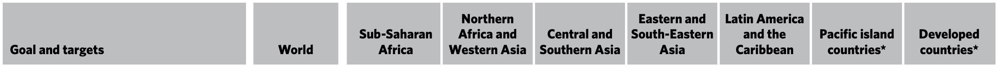
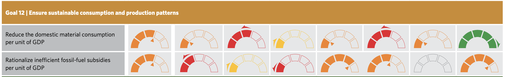
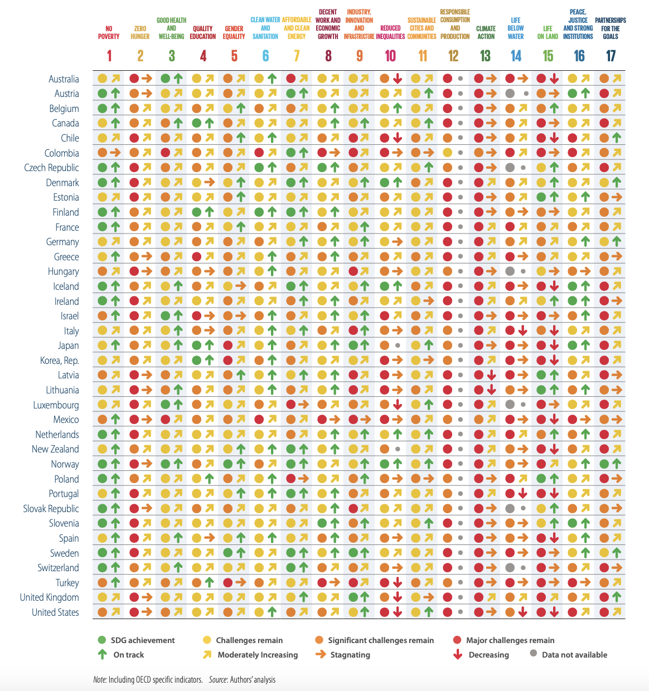

Sustainability Series #12: Responsible Consumption and Production
Ensure sustainable consumption and production patterns
Outcome targets
- Implement the 10-Year Framework of Programs on Sustainable Consumption and Production Patterns, all countries taking action, with developed countries taking the lead, taking into account the development and capabilities of developing countries
- By 2030, achieve the sustainable management and efficient use of natural resources
- By 2030, halve per capita global food waste at the retail and consumer levels and reduce food losses along production and supply chains, including post-harvest losses
- By 2020, acheive the environmentally sound management of chemicals and all wastes throughout their life cycle, in accordance with agreed international frameworks, and significantly reduce their release to air, water, and soil in order to minimize their adverse impacts on human health and the environment
- By 2030, significantly reduce waste generation through prevention, reduction, recycling, and reuse
- Encourage companies, especially large and transnational companies, to adopt sustainable practices and to integrate sustainability information into their reporting cycle
- Promote public procurement practices that are sustainable, in accordance with national policies and priorities
- By 2030, ensure that people everywhere have the relevant information and awareness for sustainable development and lifecycles in harmony with nature
Means of implementation targets
- Support developing countries to strengthen their scientific and technological capacity to move towards more sustainable patterns of consumption and production
- Develop and implement tools to monitor sustainable development impacts for sustainable tourism that creates jobs and promotes local culture and products
- Rationalize inefficient fossil-fuel subsidies that encourage wasteful consumption by removing market distortions, in accordance with national circumstances, including by restructuring taxation and phasing out those harmful subsidies, where they exist, to reflect their environmental impacts, taking fully into account the specific needs and conditions of developing countries and minimizing the possible adverse impacts on their development in a manner that protects the poor and the affected communities
Global progress on SDG 12

See more details about global progress toward SDG 12 in The Sustainable Development Goals Report 2021.
In general, global progress towards SDG 12 is not sufficient, as the 2021 SDG Progress Chart illustrates.
 US progress on SDG 12
Official statistics for US progress on the Sustainable Development Goals can be found on the US Sustainable Development Goals webpage managed by the Office of Management and Budget and hosted by the General Services Administration.
Of the 13 indicators tracked as part of SDG 12, only two have data availbale on the SDG 12 statistics page. One (12.2.2) shows that personal consumption per capita had been rising steadily as of 2016. The other indicator (12.4.1) showed that the US was still submitting reports in accord with the Montreal Protocol on Substances. The Montreal Protocol is concerned with ozone-depleting substances.
The dashboard below from the Sustainable Development Solutions Network's Sustainable Development Report 2021 shows that the US, like many of the developed nations faces significant challenges in addressing the Sustainable Development Goals — especially SDG 12.
